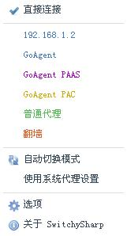
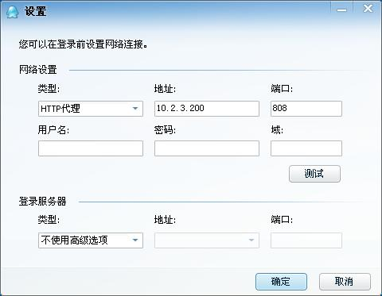

您好，欢迎访问本页面！
--------------------------------------------------
这是一台24小时提供免费上网功能的代理服务器
手机电脑都能用，速度比学校普通网络快好多
代理服务器地址：10.2.3.200
端口：808
代理类型：http
--------------------------------------------------
此服务器的主人已无法维护这台服务器
而且本服务器只是想尽绵薄之力，为同学们做点事情
所以请勿尝试攻击这台服务器
一旦对服务器造成损害
将是永久性的
甚至可能导致服务器永久关闭
--------------------------------------------------
有问题请 Q 我：306469667
--------------------------------------------------
手机免费上网方法：
先连接到学校的无线
这时候你获得了一个学校内网的IP
然后设置代理为10.2.3.200:808即可
--------------------------------------------------
chrome浏览器设置方法：
先下载Switchy.zip
安装chrome自动代理插件：SwitchySharp_1_9_52.crx
然后导入chrome自动代理插件配置备份：SwitchyOptions.bak
然后选择免费上网

--------------------------------------------------
QQ代理设置方法：
